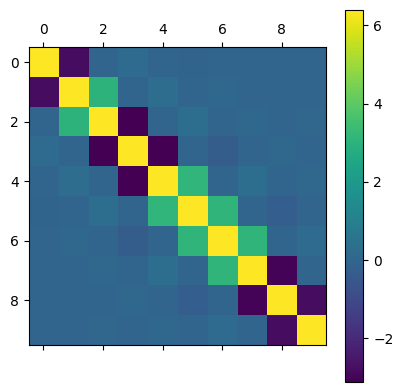

Basis Handling
We talk about how to switch between site and energy basis.
Default basis
By default, GRANAD uses the site basis. You can explicitly force a quantity to be given in energy basis by appending "_e" to it.
import jax.numpy as jnp
from granad import MaterialCatalog
chain = MaterialCatalog.get("metal_1d")
flake = chain.cut_flake( unit_cells = 10 )
site_occupations = flake.initial_density_matrix.diagonal() # site basis
energy_occupations = flake.initial_density_matrix_e.diagonal() # energy basis
Additionally, should you be unsure, the site basis is always given by appending "_x".
True
There is also a built-in function for basis transformation
True
This is usually only useful when transforming arrays of density matrices, because they are just returned from an orbital list and don't belong to its attributes, so you can't simply append _e.
Displaying transition dipole moments
